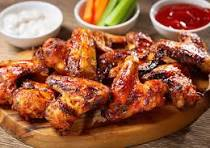

Ingredients
- 2 pounds chicken wings
- 1/4 cup soy sauce
- 1/4 cup honey
- 2 tablespoons sriracha sauce
- 2 cloves garlic, minced
- 1 tablespoon grated ginger
- Salt and pepper to taste
Instructions
- Preheat oven to 400°F (200°C) and line a baking sheet with parchment paper.
- In a bowl, mix soy sauce, honey, sriracha, garlic, ginger, salt, and pepper.
- Add chicken wings and toss to coat. Marinate for at least 30 minutes.
- Place wings on the prepared baking sheet and bake for 30-35 minutes, turning halfway through, until crispy and cooked through.
- Serve hot with your favorite dipping sauce.
Nutritional Information
Calories: 250 per serving
Protein: 20g
Carbohydrates: 12g
Fat: 15g